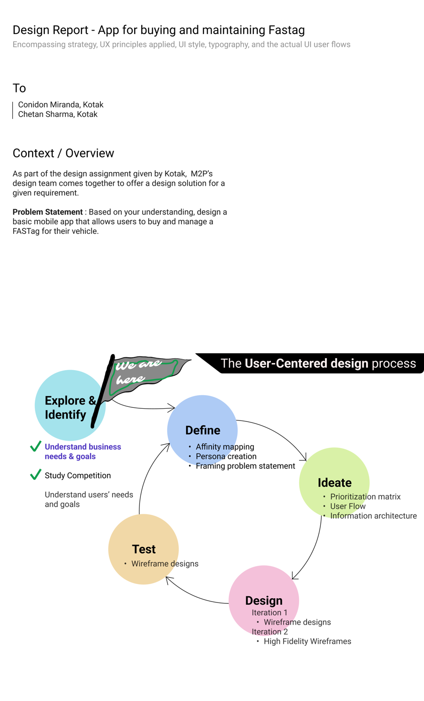
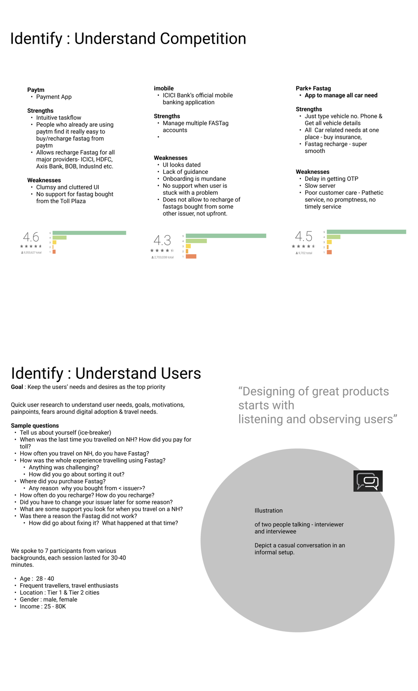
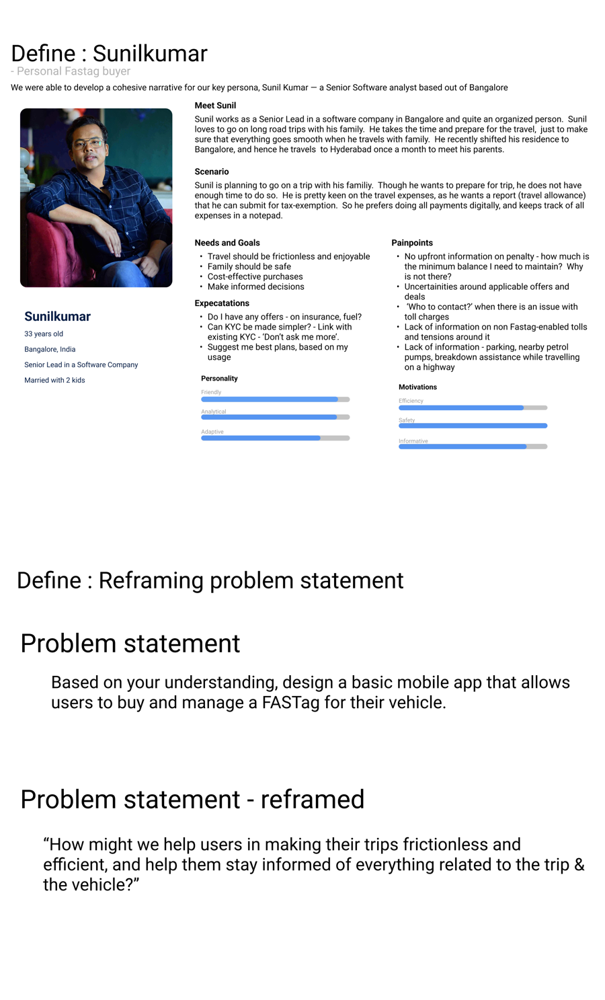
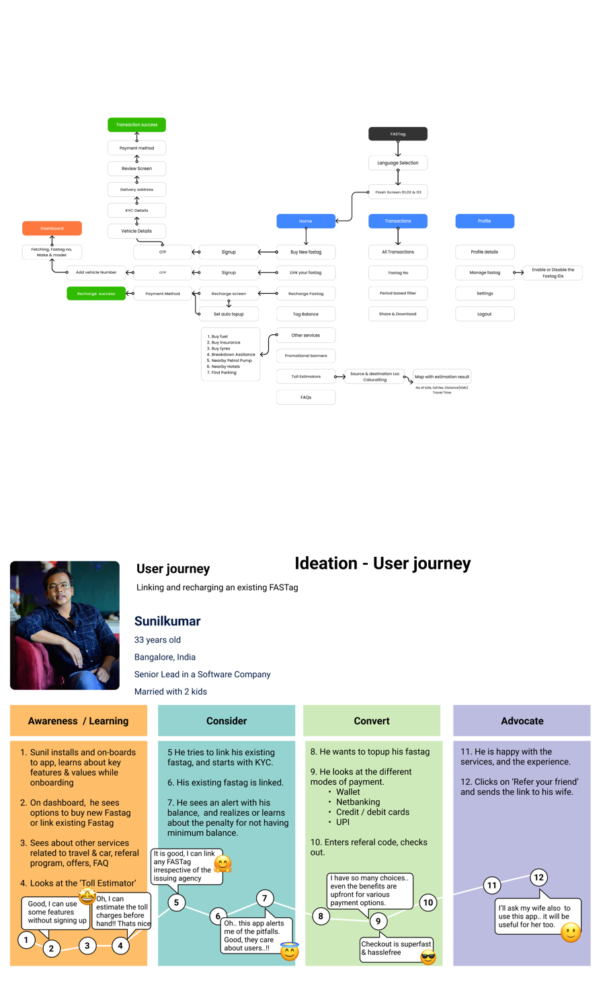
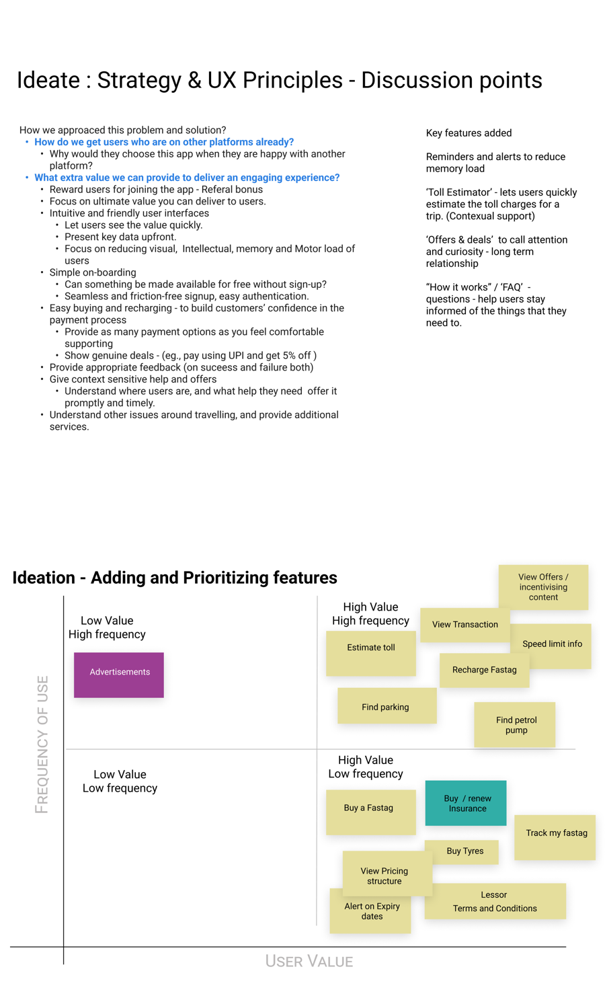
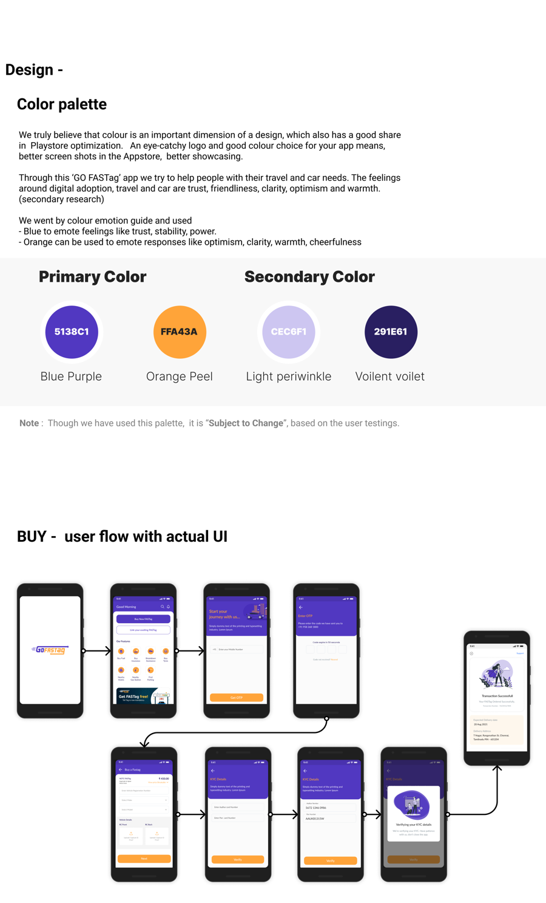
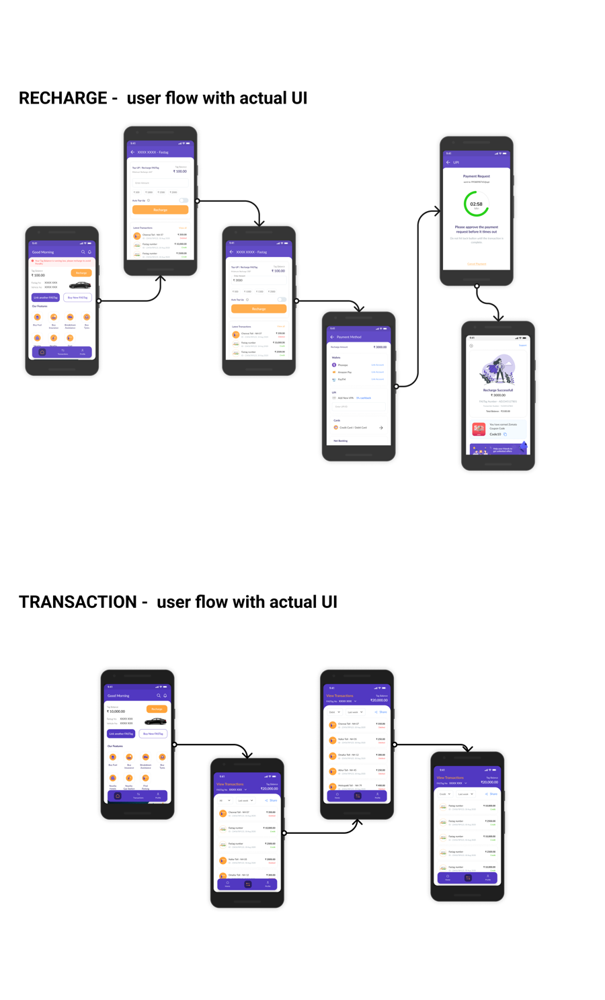
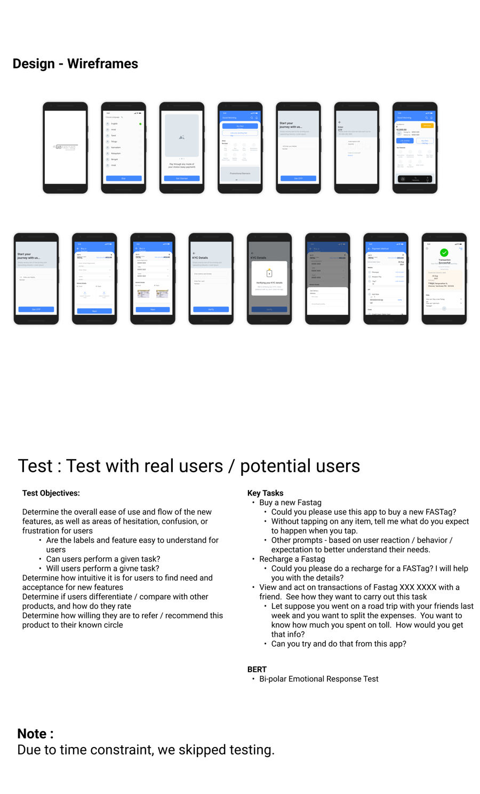
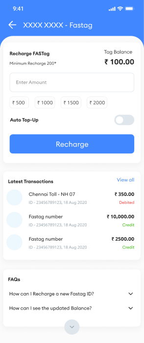

A time-boxed design assignment for Kotak — the full trace, including the usability test that was planned properly and never got run.

This was a design assignment M2P's team took on for Kotak — a specific, bounded brief: design a basic mobile app that lets someone buy and manage a FASTag for their vehicle.
The assumption to check: that FASTag apps fail at features. Mapping the ecosystem first suggested otherwise — NETC issues the tag officially, but users encounter it through banks, standalone apps, and payment wallets, each covering a slice, none covering the whole trip.
"There seems to be no app that comprehensively addresses all the needs — car and travel — of a highway traveller." · "Users are still not aware of many things around Fastag."

Seven participants, ages 28–40, frequent highway travellers from Tier 1 and Tier 2 cities: most weren't sure how much to recharge and just topped up a random amount, several were confused about why KYC couldn't be done through Aadhaar, and almost nobody could explain how they'd track a transaction after the fact.
Sunilkumar, a senior lead at a software company in Bangalore, married with two kids, plans road trips with his family and wants to prepare everything — including tolls — in advance rather than deal with surprises mid-trip.


Recharge uncertainty → need to know costs ahead of time → opportunity: estimate tolls before recharging → solution: the Toll Estimator, detailed next.
Alternative considered and rejected: a generic rewards program mirroring Paytm's model. Rejected because the research pointed at planning anxiety, not reward-seeking behaviour — a rewards layer would have addressed a problem participants didn't actually have.
Estimating tolls, recharging, viewing transactions, and speed-limit info ranked high-value and high-frequency — the core of the app. Buying a FASTag, insurance, and tracking ranked high-value but lower-frequency.

Top-level navigation surfaced the Toll Estimator, Recharge, and Transaction history — the highest-value, highest-frequency items — rather than defaulting to a generic account-first structure.

The brief explicitly freed the design from Kotak's visual identity, so colour was chosen deliberately: a blue-purple primary to signal trust and stability, and an orange-peel secondary to carry optimism, clarity, and cheerfulness — both noted honestly as subject to change based on user testing, not treated as final the moment they looked good.
Recharge and transaction history got the same direct treatment the research called for: recharge in as few steps as the payment method allows, and a transaction view organized so a trip's toll history is actually findable afterward.

Objectives: ease of use, whether labels and features were understandable, whether users could and would complete key tasks, and how the app compared to what people already used. Key tasks: buying a new FASTag without prompting, recharging with clear expectations set up front, and reviewing a shared transaction with a friend to see how naturally someone could explain their own spending. A BERT (bipolar emotional response) test was planned to capture how the experience felt, not just whether it worked.

| Metric | Result |
|---|---|
| Task completion / time on task | Not measured — test not run |
| Colour palette validation | Not validated with users |
| Toll Estimator — competitor coverage | Confirmed: 0 of 3 competitors offer it |
What's real: a fully reasoned design with a documented rationale at every decision point. What's not: any evidence it actually works for a user, because the one step that would prove that was the step time ran out on.
The recharge screen, at source resolution — minimum recharge threshold, preset amounts, an Auto Top-Up toggle, and transaction history surfaced right below it, matching what the research called for.

Paytm, iMobile, and Park+ weren't bad products. None of them owned the whole trip, and that gap was the opportunity.
"Manage a FASTag" and "stay informed about your trip" point to different apps, even though they cover the same screens.
No brand constraint meant more responsibility to justify colour, not less.
A real project has real constraints. Naming the one that mattered here is more useful than pretending it didn't exist.
The through-line: the best idea in this project — the Toll Estimator — didn't come from studying FASTag apps. It came from asking what Sunilkumar actually needed on the morning of his trip.